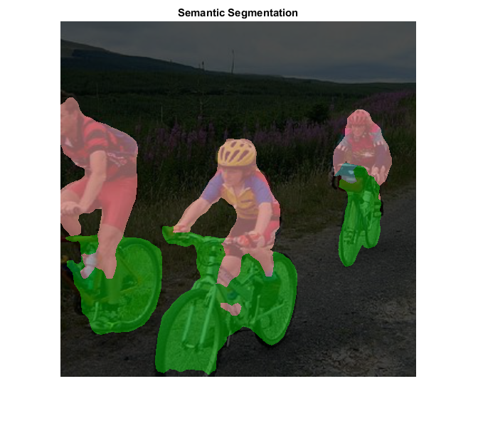

DNN Semantic Segmentation
This sample demonstrates semantic segmentation, where we label each pixel in the image with a category label.
Sources:
function dnn_semantic_segmentation_demo(im, name, crop) % input image (BGR channel order) if nargin < 1 || isempty(im) im = fullfile(mexopencv.root(), 'test', 'rgb.jpg'); end img = cv.imread(im, 'Color',true, 'FlipChannels',false); % import pretrained model if nargin < 2, name = 'FCN'; end fprintf('Load model... '); tic; switch lower(name) case 'fcn' % PASCAL VOC [net, labels, blobOpts] = FCN(); case 'enet' % Cityscapes [net, labels, blobOpts] = ENet(); otherwise error('Unrecognized model %s', name) end toc; assert(~net.empty(), 'Failed to read network %s', name); % feed image to network if nargin < 3, crop = true; end blobOpts = ['Crop',crop, blobOpts]; opts = parseBlobOpts(blobOpts{:}); blob = cv.Net.blobFromImages(img, blobOpts{:}); net.setInput(blob); % run forward pass fprintf('Forward pass... '); tic; score = net.forward(); % 1-by-nclasses-by-nrows-by-ncols toc; % prepare output image out = outputImage(img, blob, opts); % pixel-wise segmentation (predict class with max score) score = permute(score, [3 4 2 1]); % H-by-W-by-nclasses [S,L] = max(score, [], 3); % show count of pixels per class if ~mexopencv.isOctave() && mexopencv.require('stats') disp('Pixel Segmentation Summary:') tabulate({labels(L(:)).name}) end % show segmentation with color-coded classes rgb = reshape(cat(1, labels(L(:)).color), [size(L) 3]); % label2rgb out = cv.addWeighted(out, 0.3, rgb, 0.7, 0.0); imshow(out), title('Semantic Segmentation') if ~mexopencv.isOctave() % show label/score of current pixel in tooltips disp('Move data cursor over pixels to see segmentation labels') hDCM = datacursormode(gcf); set(hDCM, 'Enable','on', 'SnapToDataVertex','on', ... 'UpdateFcn',@(~,e) { sprintf('Label: %s', labels(L(e.Position(2), e.Position(1))).name) sprintf('Score: %g', S(e.Position(2), e.Position(1))) }); end % show legend of color-coded classes lgnd = createLabelsLegend(labels); figure, imshow(lgnd), title('Class Labels') end % --- Helper functions --- function dname = get_dnn_dir(dname) %GET_DNN_DIR Path to model files, and show where to get them if missing dname = fullfile(mexopencv.root(), 'test', 'dnn', dname); b = isdir(dname); if ~b % display help of calling function % (assumed to be a local function in current file) st = dbstack(1); help([mfilename() filemarker() st(1).name]) end assert(b, 'Missing model: %s', dname); end function labels = readLabelsColors(labelsFile, addBG) if nargin < 2, addBG = false; end fid = fopen(labelsFile, 'rt'); C = textscan(fid, '%s %d %d %d', 'CollectOutput',true); fclose(fid); name = C{1}; color = uint8(C{2}); if addBG name = ['background'; name]; color = [0 0 0; color]; end id = 0:(numel(name) - 1); % first label 0 corresponds to background labels = struct('id',num2cell(id(:),2), 'name',name, 'color',num2cell(color,2)); end function opts = parseBlobOpts(varargin) p = inputParser(); p.addParameter('ScaleFactor', 1.0); p.addParameter('Size', [0 0]); % [w,h] p.addParameter('Mean', [0 0 0]); % [r,g,b] p.addParameter('SwapRB', true); p.addParameter('Crop', true); p.parse(varargin{:}); opts = p.Results; end function img = imageFromBlob(blob, opts) img = permute(blob, [3 4 2 1]); % NCHW -> HWCN img = img / opts.ScaleFactor; if false && opts.SwapRB opts.Mean([1 3]) = opts.Mean([3 1]); end img = bsxfun(@plus, img, reshape(opts.Mean, 1, 1, [])); img = uint8(round(img)); end function img = cropImage(img, opts) % https://github.com/opencv/opencv/blob/3.3.1/modules/dnn/src/dnn.cpp#L95-L176 imgSz = [size(img,2) size(img,1)]; if ~isequal(imgSz, opts.Size) if opts.Crop % resize (preserving aspect-ratio) with center-cropping sf = max(opts.Size ./ imgSz); img = cv.resize(img, sf, sf); imgSz = [size(img,2) size(img,1)]; r = [fix((imgSz - opts.Size)/2) opts.Size]; img = cv.Rect.crop(img, r); else % direct resize (stretched) without cropping img = cv.resize(img, opts.Size); end end end function out = outputImage(img, blob, opts) if opts.Crop % center cropped as fed to network out = cropImage(img, opts); else % resized image (squashed) as fed to network out = imageFromBlob(blob, opts); end out = flip(out, 3); % BGR to RGB end function img = createLabelsLegend(labels) img = cell(numel(labels),1); for i=1:numel(labels) img{i} = repmat(reshape(labels(i).color, [1 1 3]), 20, 120, 1); img{i} = cv.putText(img{i}, labels(i).name, [0 15], ... 'Color',[1 1 1]*255, 'FontFace','HersheySimplex', 'FontScale',0.5); end img = cat(1, img{:}); end % --- Pretrained models --- % See also: https://github.com/opencv/opencv_extra/blob/3.3.1/testdata/dnn/download_models.py function [net, labels, blobOpts] = FCN() %FCN Fully Convolutional Networks, FCN-8s PASCAL VOC [Caffe] % % homepage = https://github.com/shelhamer/fcn.berkeleyvision.org % % ## Model % % file = test/dnn/FCN/fcn8s-heavy-pascal.prototxt % url = https://github.com/opencv/opencv/raw/3.3.1/samples/data/dnn/fcn8s-heavy-pascal.prototxt % % ## Weights % % file = test/dnn/FCN/fcn8s-heavy-pascal.caffemodel % url = http://dl.caffe.berkeleyvision.org/fcn8s-heavy-pascal.caffemodel % hash = c449ea74dd7d83751d1357d6a8c323fcf4038962 % size = 513 MB % % ## Classes % % file = test/dnn/FCN/pascal-classes.txt % url = https://github.com/opencv/opencv/raw/3.3.1/samples/data/dnn/pascal-classes.txt % dname = get_dnn_dir('FCN'); net = cv.Net('Caffe', ... fullfile(dname, 'fcn8s-heavy-pascal.prototxt'), ... fullfile(dname, 'fcn8s-heavy-pascal.caffemodel')); labels = readLabelsColors(fullfile(dname, 'pascal-classes.txt'), false); blobOpts = {'SwapRB',false, 'Size',[500 500], 'Mean',[104.00699, 116.66877, 122.67892]}; end function [net, labels, blobOpts] = ENet() %ENET ENet on Cityscapes dataset [Torch] % % homepage = https://github.com/e-lab/ENet-training % % ## Model + Weights % % file = test/dnn/ENet/model-cityscapes.net % url = https://github.com/e-lab/ENet-training/releases/download/v1.cs/model-cityscapes.net % hash = b4123a73bf464b9ebe9cfc4ab9c2d5c72b161315 % size = 3.08 MB % % ## Classes % % file = test/dnn/ENet/enet-classes.txt % url = https://github.com/opencv/opencv/raw/3.3.1/samples/data/dnn/enet-classes.txt % dname = get_dnn_dir('ENet'); net = cv.Net('Torch', ... fullfile(dname, 'model-cityscapes.net')); labels = readLabelsColors(fullfile(dname, 'enet-classes.txt'), false); blobOpts = {'SwapRB',true, 'Size',[1024 512], 'ScaleFactor',1/255}; end
Load model... Elapsed time is 1.278333 seconds.
Forward pass... Elapsed time is 5.553631 seconds.
Pixel Segmentation Summary:
Value Count Percent
background 172429 68.97%
person 36320 14.53%
bicycle 40702 16.28%
motorbike 549 0.22%
Move data cursor over pixels to see segmentation labels
